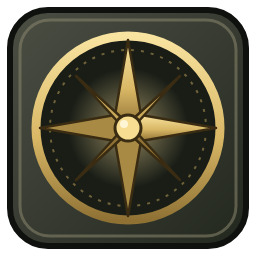

DFO Companion
Fan-made and unofficial. Not affiliated with, endorsed or sponsored by Bethesda Softworks, ZeniMax Media or the makers of Daggerfall Online. Game artwork is loaded from your own installed game at runtime and is not bundled.
Created by